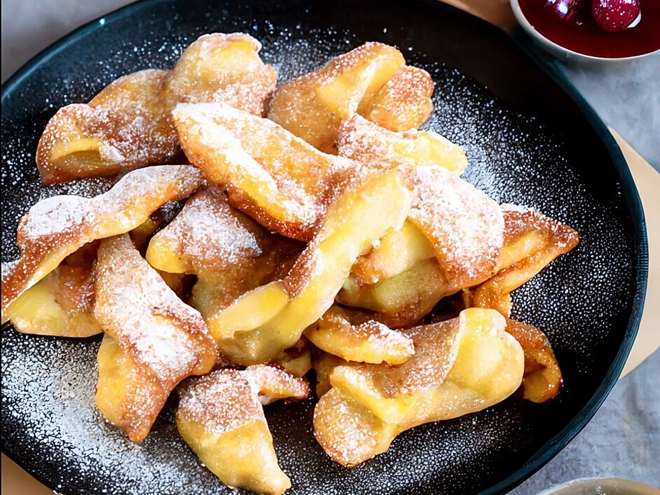

Return home
Kaiserschmarrn

Description
As a main course or desert - This Austrian classic is loved by everyone.
We'll show you how to make it yourself!
Ingredients
- 4 eggs
- 125g flour
- 125ml milk
- 1 pinch of salt
- 1 tsp. baking powder
- 40g sugar
- 80g raisins
- 4 tbsp. butter
- 1 tbsp. icing sugar
Steps
- Separate eggs
-
Make a dough with the egg yolks, flour, milk, salt, baking powder and
sugar
- Beat the egg whites and add them to the dough
- Add raisins
- Heat butter in a pan and make a pancake
- Turn the pancake and fry it on the other side while adding butter
- Break the pancake into pieces and add icing sugar